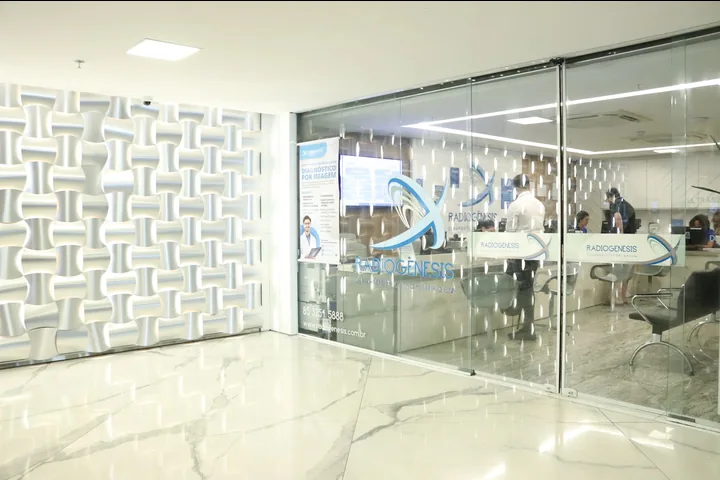
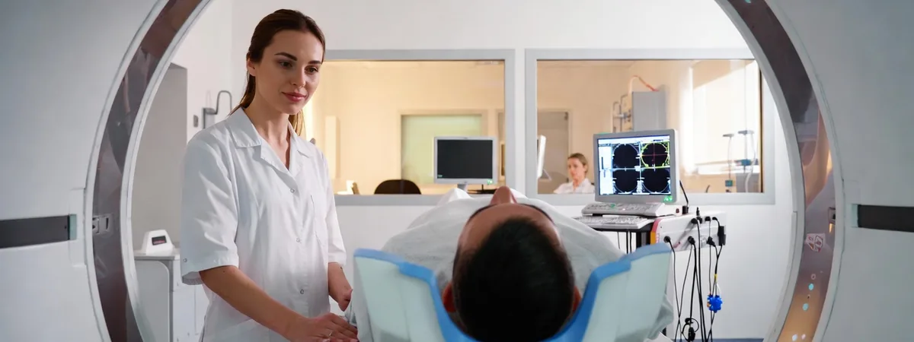
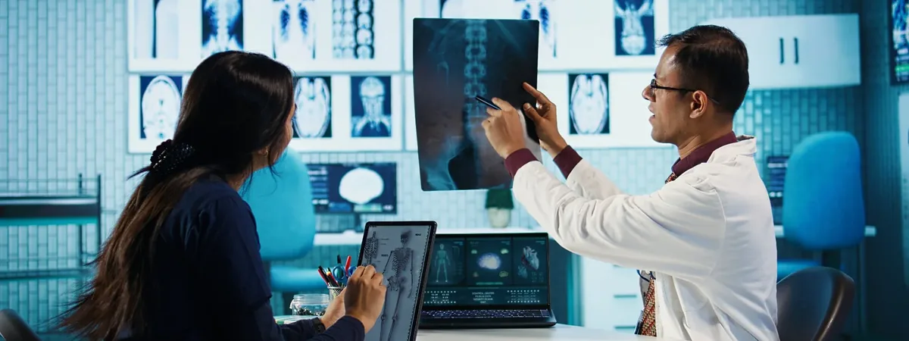
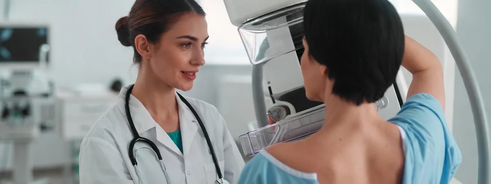
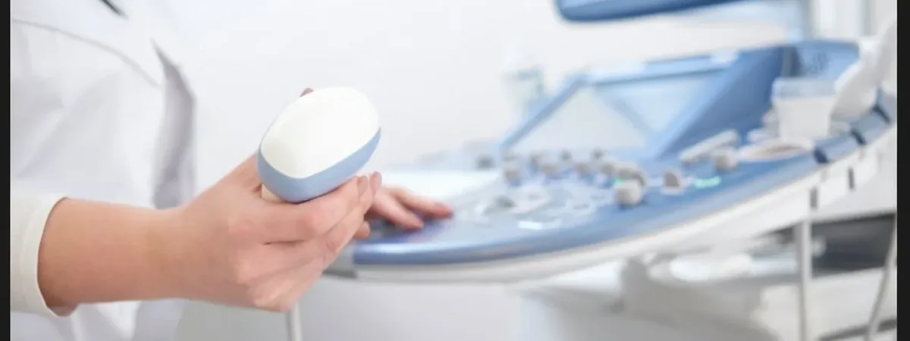

Tecnologia e cuidado
para a sua saúde
Exames de imagem com equipamentos de última geração, laudos rápidos e uma equipe médica altamente qualificada.
Como podemos ajudá-lo?
Missão
Atender com máxima excelência.
Visão
Ser referência em medicina diagnóstica, buscando o bem-estar e a plena satisfação dos nossos clientes.
Valores
Ética, qualidade, humanização, inovação, excelência profissional e foco no cliente.
Exames e Procedimentos
Equipamentos de última geração para diagnósticos precisos.
Ressonância Magnética
Imagens detalhadas sem radiação, ideal para tecidos moles e articulações.
Tomografia Computadorizada
Diagnósticos rápidos com tecnologia multidetectores.
Biópsia, Punção e Marcação Cirúrgica
Biópsias, punções (PAAF) e marcações pré-cirúrgicas guiadas por imagem para máxima segurança.
Ultrassonografia Geral
Exame não invasivo para avaliação de órgãos e estruturas.
Mamografia Digital
Detecção precoce com tecnologia digital de alta definição.
Ultrassonografia com Doppler
Avaliação detalhada do fluxo sanguíneo nos vasos em tempo real para diagnósticos vasculares precisos.
Densitometria Óssea
Avaliação da densidade mineral óssea para diagnóstico de osteoporose.
Mamotomia
Procedimento de biópsia minimamente invasivo guiado por imagem com alta precisão.
Quem Somos
Tradição e inovação há mais de 20 anos.
Vídeo institucional da Radiogênesis mostrando as instalações, equipamentos de diagnóstico por imagem e a equipe médica das unidades em Fortaleza.
A Radiogênesis é referência em diagnóstico por imagem há mais de 20 anos. Combinamos tecnologia de ponta com atendimento humanizado.
Nossas três unidades contam com aparelhos de última geração e uma equipe de médicos especialistas comprometidos com qualidade.
História da Clínica
A Radiogênesis conta hoje com modernos aparelhos de Ultrassonografia, Tomografia Computadorizada e Densitometria, destacando-se com o mais moderno mamógrafo digital da cidade. Mas nem sempre foi assim.
A história da Radiogênesis começou em 2005, quando, dentro do Hospital Gênesis, funcionava um pequeno serviço de imagem destinado aos pacientes internados e voltado para a área obstétrica.
Dr. José Gerardo, médico renomado e de mente visionária, juntou-se à sua filha, Dra. Ana Maria, ambos obstetras. Convidou as Dras. Núbia e Adriana Pontes, duas experientes ultrassonografistas, e os radiologistas Drs. Ricardo Rocha, Rodrigo Martins e Eduardo Portela — e assim foi criada a equipe Radiogênesis.
Começaram em um espaço pequeno, mas com dedicação, reconhecimento e investimentos contínuos em tecnologia avançada e inovação, a clínica cresceu e oferece hoje diagnósticos com alto índice de precisão.
Fundação da Radiogênesis — Unidade Medical
Abertura da Unidade Hospital Gênesis
Inauguração da Unidade BS Tower
Mais de 150 mil exames realizados e referência em diagnóstico no Ceará
Conheça a Radiogênesis
Em breve, fotos das nossas unidades e equipamentos.
Missão, Visão e Valores
Missão
Atender com máxima excelência.
Visão
Ser referência em medicina diagnóstica, buscando o bem-estar e a plena satisfação dos nossos clientes.
Valores
Ética, qualidade, humanização, inovação, excelência profissional e foco no cliente.
Equipe Médica
Profissionais dedicados ao diagnóstico preciso.

Dr. Eduardo Portela
Ultrassonografia
CRM/5579
Dra. Adriana Moreira Pontes
Ultrassonografia
CRM/3820
Dra. Ana Mª Leopercio Pontes
Ultrassonografia
CRM/4575
Dra. Núbia Moreira Melo
Ultrassonografia
CRM/3152
Dr. Rodrigo Martins Nogueira
Radiologista
CRM/6495
Dr. Ricardo Mendonça Rocha
Radiologista
CRM/6759
Nossas Unidades
Três endereços para melhor atendê-lo.

Rua Antônio Augusto, 1271 - Aldeota,
Fortaleza/CE — CEP: 60110-370
Seg–Sex: 8h às 18h
Sábado: 8h às 12h
Seg–Sex: 7h às 18h
Sábado: 7h às 11h

Av. Santos Dumont, 1168 - Aldeota,
Fortaleza/CE — CEP: 60150-160
Tomografia Computadorizada: 24h
Ultrassonografia: 8h às 18h
Plantão Ultrassom Obstétrica: 7h às 19h
Emergência Obstétrica: 24h
Seg–Sex: 8h às 18h
Sábado: 8h às 12h

Rua Gonçalves Lêdo, 777 - Aldeota,
Fortaleza/CE — CEP: 60110-260
Pelo Central de Atendimento:
(85) 3254.5885 | (85) 3254.5888
Seg–Sex: 7h às 18h
Sábado: 7h às 11h
Convênios
Trabalhamos com os principais planos de saúde.


Não encontrou seu convênio?
Fale pelo WhatsAppOuvidoria
Sua opinião é fundamental.
A Ouvidoria da Radiogênesis é o canal dedicado para ouvir suas sugestões, elogios ou reclamações.
Trabalhe Conosco
Venha fazer parte do nosso time.
Junte-se à nossa equipe
Envie seu currículo e venha crescer conosco.
Enviar Currículo Ou use seu app de e-mail padrão: rhradiogenesis@gmail.comRessonância Magnética
A Ressonância Magnética (RM) é um método de diagnóstico por imagem que utiliza campos magnéticos e ondas de rádio para gerar imagens detalhadas dos órgãos e tecidos internos do corpo humano, sem utilizar radiação ionizante.

Indicações
- Avaliação de doenças do sistema nervoso central (crânio e coluna)
- Investigação de lesões musculares, tendíneas e articulares
- Diagnóstico de tumores e nódulos em diversos órgãos
- Avaliação cardíaca e vascular
- Investigação de doenças abdominais e pélvicas
Contraindicações
- Portadores de marcapasso cardíaco ou desfibrilador implantável
- Implantes cocleares (dependendo do modelo)
- Clipes metálicos intracranianos (dependendo do material)
- Corpos estranhos metálicos nos olhos
- Gravidez no primeiro trimestre (avaliar risco/benefício)
- Claustrofobia severa (pode ser necessária sedação)
Preparo para o Exame
Em geral não é necessário preparo especial. Para exames abdominais pode ser solicitado jejum de 4 horas. Retire adornos metálicos antes do exame. Informe ao médico sobre implantes ou próteses metálicas.
Tomografia Computadorizada
A Tomografia Computadorizada (TC) é um exame de imagem que utiliza raios X e processamento computacional para gerar imagens transversais detalhadas do interior do corpo.

Indicações
- Avaliação de traumas e fraturas ósseas
- Investigação de doenças pulmonares e torácicas
- Diagnóstico de lesões abdominais e pélvicas
- Avaliação de AVC e hemorragias cerebrais
- Planejamento cirúrgico e oncológico
- Investigação de doenças vasculares
Contraindicações
- Gravidez (especialmente no primeiro trimestre) — avaliar risco/benefício
- Alergia ao contraste iodado (quando aplicável)
- Insuficiência renal grave (uso de contraste)
- Hipertireoidismo não tratado (uso de contraste iodado)
Preparo para o Exame
Para exames sem contraste, geralmente não é necessário preparo. Com contraste, jejum de 4 horas é recomendado. Informe sobre alergias e medicamentos em uso.
Biópsia, Punção e Marcação Cirúrgica
Procedimentos minimamente invasivos realizados sob guia de imagem para coleta de amostras de tecido, aspiração de líquidos ou marcação de lesões para cirurgia.
Indicações
- Investigação de nódulos suspeitos em mama, tireoide, fígado e outros órgãos
- Coleta de material para análise histopatológica ou citológica
- Punção aspirativa de cistos e abscessos
- Marcação de lesões não palpáveis antes de cirurgias
- Estadiamento de doenças oncológicas
Contraindicações
- Distúrbios graves de coagulação não corrigidos
- Uso de anticoagulantes (pode ser necessária suspensão prévia)
- Infecção ativa na região a ser puncionada
- Impossibilidade de cooperação do paciente
Preparo para o Exame
Exames de coagulação podem ser solicitados previamente. Informe ao médico sobre uso de anticoagulantes, AAS ou outros medicamentos. Jejum de 4 horas em alguns procedimentos.
Raio-X Digital
O Raio-X Digital utiliza radiação ionizante em baixa dose para gerar imagens de estruturas internas do corpo com alta resolução e menor exposição.

Indicações
- Diagnóstico de fraturas e lesões ósseas
- Avaliação pulmonar (pneumonia, derrame pleural, tuberculose)
- Triagem cardiológica (silhueta cardíaca)
- Avaliação da coluna vertebral
- Exames pré-operatórios e admissionais
Contraindicações
- Gravidez confirmada ou suspeita (especialmente abdômen e pelve) — avaliar risco/benefício
- Exposição repetida e desnecessária deve ser evitada
Preparo para o Exame
Não é necessário preparo especial. Retire adornos metálicos, brincos e piercings da região a ser examinada.
Mamografia Digital
A Mamografia Digital é o exame padrão-ouro para rastreamento e diagnóstico precoce do câncer de mama, identificando alterações antes mesmo de serem palpáveis.

Indicações
- Rastreamento de câncer de mama a partir dos 40 anos (anual)
- Investigação de nódulos, espessamentos ou secreções mamilares
- Avaliação de microcalcificações
- Acompanhamento de pacientes com histórico familiar de câncer de mama
- Pré-operatório de cirurgias mamárias
Contraindicações
- Gravidez (relativa — avaliar risco/benefício em casos indispensáveis)
- Implantes mamários não são contraindicação, mas devem ser informados ao técnico
- Amamentação recente pode reduzir a qualidade das imagens
Preparo para o Exame
Não utilize desodorante, talco ou creme nas axilas e mamas no dia do exame. Evite realizar no período pré-menstrual. Use roupas de duas peças para facilitar o procedimento.
Ultrassonografia com Doppler
O Doppler avalia o fluxo sanguíneo em artérias e veias em tempo real, identificando obstruções, tromboses e alterações vasculares com precisão.
Indicações
- Diagnóstico de trombose venosa profunda (TVP)
- Avaliação de insuficiência venosa e varizes
- Investigação de estenoses e oclusões arteriais
- Avaliação do fluxo uteroplacentário em gestações de risco
- Diagnóstico de aneurismas vasculares
- Avaliação de transplantes renais e hepáticos
Contraindicações
- Não há contraindicações absolutas para o Doppler convencional
- Feridas abertas ou curativos na região podem dificultar o exame
- Obesidade e edema intenso podem limitar a qualidade das imagens
Preparo para o Exame
Para Doppler abdominal: jejum de 6 horas. Para membros: sem preparo específico. Vista roupas confortáveis que permitam acesso à região.
Densitometria Óssea
A Densitometria Óssea (DEXA) mede a densidade mineral dos ossos, sendo o método mais preciso para diagnóstico de osteoporose e osteopenia.
Indicações
- Diagnóstico e monitoramento de osteoporose e osteopenia
- Mulheres na pós-menopausa (especialmente acima de 65 anos)
- Homens acima de 70 anos
- Pacientes em uso prolongado de corticoides
- Histórico de fraturas por trauma mínimo
- Avaliação em doenças que causam perda óssea
Contraindicações
- Gravidez
- Realização de exames com contraste baritado ou radioativo nas últimas 72 horas
- Implantes metálicos extensos na região lombar ou quadril podem interferir nos resultados
Preparo para o Exame
Não realize exames com contraste nos 3 dias anteriores. Não tome suplementos de cálcio no dia do exame. Vista roupas sem metais. Informe sobre histórico de fraturas.
Mamotomia
A Mamotomia é um procedimento de biópsia minimamente invasivo guiado por imagem para investigação de microcalcificações e nódulos não palpáveis.
Indicações
- Investigação de microcalcificações suspeitas detectadas na mamografia
- Biópsia de nódulos mamários não palpáveis
- Lesões de difícil acesso à biópsia convencional
- Retirada de nódulos benignos (vacuoaspiração)
- Marcação pré-cirúrgica de lesões
Contraindicações
- Distúrbios de coagulação não corrigidos
- Uso de anticoagulantes (pode ser necessária suspensão prévia)
- Infecção ativa na mama
- Implantes mamários posicionados próximos à lesão (avaliar individualmente)
Preparo para o Exame
Suspender anticoagulantes e AAS conforme orientação médica. Não utilize desodorante ou creme nas mamas no dia. Traga exames anteriores de mama.
Ultrassonografia Geral
A Ultrassonografia utiliza ondas sonoras de alta frequência para gerar imagens dos órgãos e estruturas internas do corpo, sem uso de radiação ionizante.

Indicações
- Avaliação de órgãos abdominais (fígado, vesícula, baço, rins)
- Investigação de nódulos tireoidianos
- Acompanhamento de gestação
- Avaliação pélvica feminina e masculina
- Diagnóstico de hérnias e massas superficiais
Contraindicações
- Não há contraindicações absolutas
- Limitações em pacientes obesos ou com muito gás intestinal
Preparo para o Exame
Para exames abdominais: jejum de 4 a 6 horas e bexiga cheia. Para exames pélvicos: bexiga cheia. Para exames de tireoide e partes moles: sem preparo.
Política de Privacidade e Termos de Uso
Efetiva a partir de setembro de 2020.
Política de Privacidade
A sua privacidade é importante para nós. É política do Radiogênesis respeitar a sua privacidade em relação a qualquer informação sua que possamos coletar no site Radiogênesis, e outros sites que possuímos e operamos.
Solicitamos informações pessoais apenas quando realmente precisamos delas para lhe fornecer um serviço. Fazemos por meios justos e legais, com o seu conhecimento e consentimento.
Apenas retemos as informações coletadas pelo tempo necessário para fornecer o serviço solicitado. Quando armazenamos dados, protegemos dentro de meios comercialmente aceitáveis para evitar perdas e roubos, bem como acesso, divulgação, cópia, uso ou modificação não autorizados.
Não compartilhamos informações de identificação pessoal publicamente ou com terceiros, exceto quando exigido por lei.
O nosso site pode ter links para sites externos que não são operados por nós. Esteja ciente de que não temos controle sobre o conteúdo e práticas desses sites.
Você é livre para recusar a nossa solicitação de informações pessoais, entendendo que talvez não possamos fornecer alguns dos serviços desejados.
O uso continuado de nosso site será considerado como aceitação de nossas práticas em torno de privacidade e informações pessoais.
Termos de Uso
1Termos
Ao acessar ao site Radiogênesis, concorda em cumprir estes termos de serviço, todas as leis e regulamentos aplicáveis.
2Uso de Licença
É concedida permissão para baixar temporariamente uma cópia dos materiais apenas para visualização transitória pessoal e não comercial. Sob esta licença, você não pode:
- Modificar ou copiar os materiais;
- Usar os materiais para qualquer finalidade comercial;
- Tentar descompilar ou fazer engenharia reversa de qualquer software contido no site;
- Remover quaisquer direitos autorais ou outras notações de propriedade dos materiais;
- Transferir os materiais para outra pessoa ou espelhar os materiais em qualquer outro servidor.
3Isenção de Responsabilidade
Os materiais no site da Radiogênesis são fornecidos "como estão". O Radiogênesis não oferece garantias, expressas ou implícitas.
4Limitações
Em nenhum caso o Radiogênesis ou seus fornecedores serão responsáveis por quaisquer danos decorrentes do uso ou da incapacidade de usar os materiais em Radiogênesis.
5Precisão dos Materiais
Os materiais exibidos no site da Radiogênesis podem incluir erros técnicos, tipográficos ou fotográficos. O Radiogênesis pode fazer alterações nos materiais a qualquer momento, sem aviso prévio.
6Links
O Radiogênesis não é responsável pelo conteúdo de nenhum site vinculado. O uso de qualquer site vinculado é por conta e risco do usuário.
7Modificações
O Radiogênesis pode revisar estes termos de serviço do site a qualquer momento, sem aviso prévio.